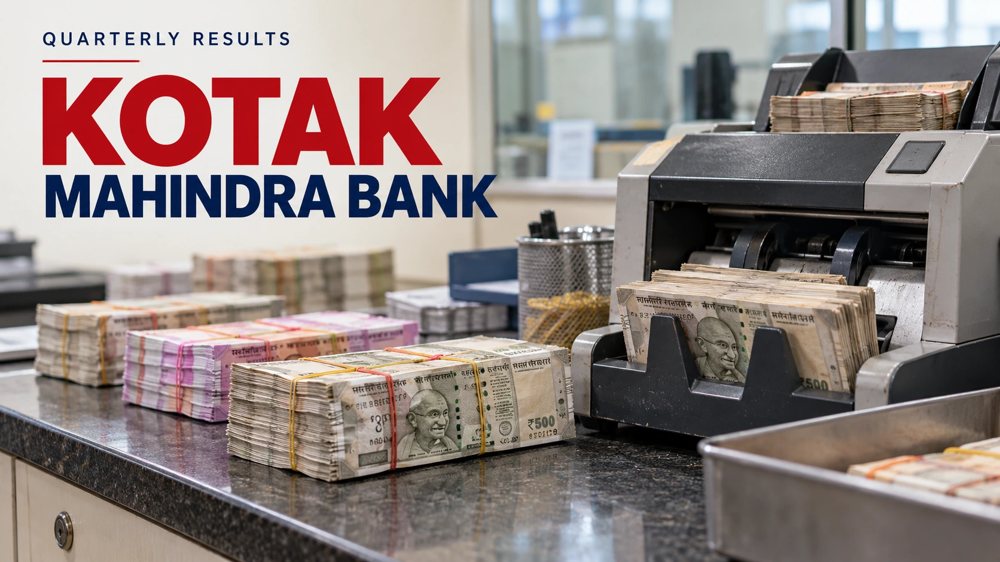

Kotak Bank profit rises 29%, but deposit growth squeezes its lending margin
India’s Kotak reports stronger September-quarter earnings, while foreign-currency deposits complicate the picture behind its rapid expansion.

Kotak Mahindra Bank reported a 29% increase in September-quarter standalone profit on October 24, as stronger interest income and lower provisions outweighed pressure on its lending margin. The Indian lender earned about 42.12 billion rupees, while its net interest margin narrowed to 4.31%. For investors, the result offers a useful distinction: a bank can earn more from a larger business even as the return it collects on each unit of interest-earning assets declines.
The quarter ended September 30 is Kotak’s second quarter of fiscal 2027, rather than the second quarter of the calendar year. Reuters reported that profit exceeded the 41.04 billion rupees expected by analysts in LSEG’s compilation. That is an earnings beat, rather than evidence of an immediate stock-market reaction. The results were announced on Saturday; the announcement itself supplies no post-results trading price.
The balance sheet grew faster than its margin
Net interest income, the difference between interest earned and interest paid, rose 16% from a year earlier to about 84.59 billion rupees. However, net interest margin fell from 4.53% in the preceding quarter and 4.54% a year earlier. The sequential decline was 22 basis points, or 0.22 percentage points. Growth in income and contraction in margin are consistent when the asset base expands sufficiently; treating those measures as interchangeable would obscure the main tension in these results.
Kotak attributed much of the margin moderation to foreign-currency nonresident deposits, known as FCNR(B) deposits. Its presentation also showed funding costs rising to 4.52% from 4.46% in the June quarter. These deposits therefore deserve attention alongside the headline growth rate. A larger funding base can support additional lending, but its contribution to earnings depends on the cost of obtaining and deploying it. Our explanation of different interest-rate cycles provides background on why funding conditions require a country-specific reading.
Period-end deposits increased 23% from a year earlier, while net advances increased 25%. The bank’s adjusted comparisons were more restrained: deposits excluding FCNR(B) balances grew 13%, and advances excluding specified deposit-backed loans and an acquired portfolio grew 19%. Those are the bank’s disclosed adjustments, not an alternative set of audited earnings. They help readers separate broad underlying growth from particular transactions and funding initiatives that enlarged the reported balance sheet.
Credit quality helped, with a quarterly qualification
The investor presentation showed gross nonperforming loans at 1.04% of loans, down from 1.18% in June and 1.39% a year earlier. Net nonperforming loans were 0.24%. Improved problem-loan ratios support the earnings story, although a ratio alone cannot show whether every borrower segment is improving: its denominator also changes when lending grows. The absolute problem-loan balance and the movement of loans into and out of that category remain useful checks.
Provisions fell 15% from the year-earlier quarter, helping profit. They nevertheless increased from the June quarter. This is why a year-over-year improvement should not be described as an uninterrupted quarterly decline in credit charges. The distinction also matters when comparing Kotak with other banks: our recent Bank of America earnings report illustrates the importance of examining the components behind a profit headline rather than assuming a single reported change explains the whole result.
Bank earnings and group earnings are different measures
Kotak’s consolidated profit, which includes its wider financial-services businesses, reached 56.45 billion rupees, up 26% from a year earlier. That figure is separate from the standalone bank profit cited in the headline. Mixing consolidated earnings with the bank’s own margin would give readers mismatched scopes. The broader group comparison can be useful, but it cannot substitute for examining how the lending operation generates income and absorbs credit costs.
The next results will show whether funding obtained during this expansion produces enough additional income to stabilize the margin. Investors can assess that through deposit composition, funding costs, adjusted loan growth and credit charges, rather than extrapolating the 29% profit increase alone. The investment issue is the durability of earnings after the balance-sheet expansion: growth financed at a higher marginal cost needs to earn its place in future returns.
KOTAKBANK · View NSE chart on TradingView ↗
Sources and methodology
Sources checked October 24, 2026. Reported findings and company or regulatory statements are attributed in the text; discussion of financial implications is editorial analysis. The generated cover is illustrative.